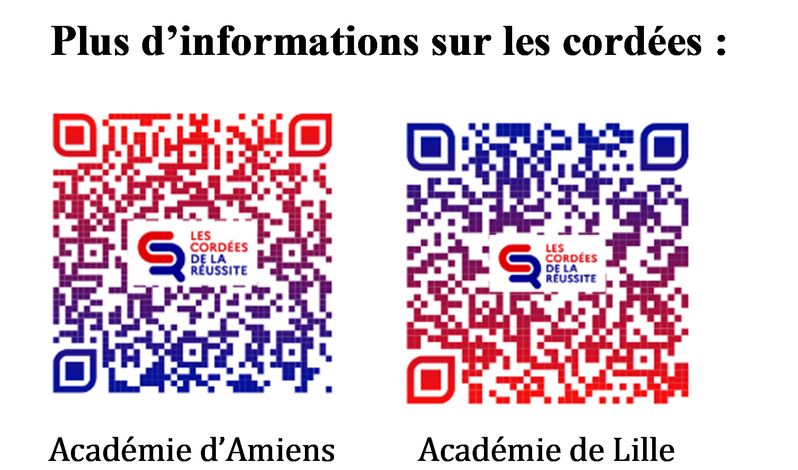

La cordée de la réussite, qu'est-ce que c'est?
En alplinisme, une cordée est un groupe de personnes reliées par une corde, qui s’entraident pour atteindre le sommet. La classe préparatoire du lycée Colbert s'en est inspiré et propose ce dispositif pour permettre à des élèves de la 3e à la terminale intéressés de découvrir le monde de la science ! Ce programme propose ainsi des activités de groupe, des visites, des immersions et échanges avec étudiants et enseignants d'études supérieures.
Si...
- vous vous intéressez à la science
- vous aimez expérimenter et résoudre des problèmes
- vous voulez visiter des laboratoires ou des entreprises
- vous envisagez une carrière dans le domaine de la science
- vous avez l'esprit d'équipe
... alors vous êtes le cobaye idéal pour la cordée de la réussite !

Quelles activités sont proposées ?
Les activités proposées pour la cordées sont ponctuelles, cela ne constitue pas de cours réguliers! Il s'agit donc de profiter de moments intéressants sans ajouter de charge de travail !Pour les élèves de 3e:
- Découverte de l'option SI/CIT
- Immersions dans les TP de spécialité NSI, les projets finaux de STI2D
- Présentation de TP par des élèves de la classe préparatoire MPI
- Des sorties et découvertes
- Immersions en prépa TSI et MPI
- Stages de "prépa à la prépa"
- Tutorat d'accompagnement vers le BAC
- Concours scientifique
Pour les élèves de 1ère et de Terminale:

Comment s'inscrire ?
Pour s'inscrire à la cordée de la réussite, il suffit de cliquer sur le lien ci-dessous, il mène vers un formulaire à télécharger, imprimer, compléter et à donner à votre professeur référent. 📄 Télécharger la plaquette
